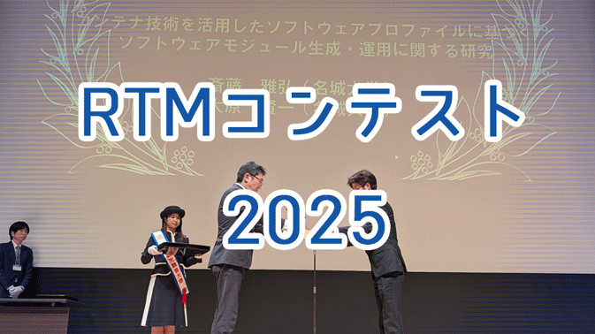

OpenRTM...
ロボットシステムをコンポーネント思考開発するためのソフトウェアプラットフォームです。

OpenRTM...
OpenRTM-aist 2.0.2 をリリースしました

10分で始めよう！
インストール、サンプルの起動・接続、RTSystemEditor・rtshellを使った基本的動作確認の入門ガイド
hogehoge—0011
how to code
manual_md1
News…
- RTミドルウエアコンテスト2025が開催されました 2025-12-11
- RTミドルウエアコンテスト2025の申込みを受付開始しました 2025-09-30
- GPG公開鍵を更新しました 2025-09-11
- RTミドルウエアサマーキャンプ2025が行われました 2025-09-01
- サマーキャンプ2025の参加受付を開始しました 2025-09-01
- ROBOMECH2025 RTミドルウェア講習会を開催しました 2025-06-09
- ROBOMECH2025 申し込み開始しました 2025-04-02
- Welcome to Jekyll! 2025-03-11
- RTミドルウエアコンテスト2024が開催されました 2024-12-23
- Ubuntu 24.04用のパッケージをリリースしました 2024-12-23
- OpenRTM-aist 2.0.2 をリリースしました 2024-06-07
- ROBOMECH2024申し込み開始しました 2024-05-08
- RTミドルウエアコンテスト2023が開催されました 2023-12-14
- RTミドルウエアコンテスト2023の申込みを受付開始しました。 2023-10-10
- RTミドルウエアサマーキャンプ2023が行われました 2023-08-29
- RTミドルウエアコンテスト2023の申込みを受付開始しました。 2023-07-25
- Ubuntu 22.04用のパッケージをリリースしました 2023-05-10
- Windows版 OpenRTM-aist 2.0.1-1 リリース 2023-04-20
- OpenRTM-aist 2.0.1 をリリースしました 2023-01-24
- RTミドルウエアコンテスト2022が開催されました 2022-12-14
- Raspberry Pi OS用OpenRTM-aist 2.0.0パッケージをリリースしました 2022-11-07
- RTミドルウエアサマーキャンプ2022が行われました 2022-08-29
- RTMコンテスト2022の申込みを受付開始しました 2022-08-01
- OpenRTM-aist 2.0.0 をリリースしました 2022-06-05
- ROBOMECH2022を開催しました 2022-06-01
- RTミドルウエアコンテスト2021が開催されました 2021-12-16
- RTミドルウエアサマーキャンプ2021が行われました 2021-08-30
- RTMコンテスト2021の申込みを受付開始しました 2021-08-01
- ROBOMECH2021を開催しました 2021-06-07
- RTMコンテスト2021の申込みを受付開始しました 2021-03-01
- RTミドルウエアコンテスト2020が開催されました 2020-12-14
- SI2020 「NEDO特別講座：ロボット共通プラットフォーム講習会」を開催します. 2020-11-05
- OpenRTM-aistを利用した搬送ロボットTHK株式会社「SIGNAS」受注開始 2020-11-01
- MacOS用パッケージ群を公開しました 2020-10-30
- RTMコンテスト2020のプログラムを公開しました 2020-10-20
- RTC-Library-FUKUSHIMAでOpenRTM用拡張モジュールがリリースされました 2020-10-08
- SICE 2020 RTM講習会をオンラインで開催しました 2020-09-24
- RTミドルウエアサマーキャンプ2020が行われました 2020-08-31
- OpenRTM-aist-1.2.2 をリリースしました 2020-08-26
- 日本機械学会ロボティクスメカトロニクス部門「技術業績賞」を受賞しました 2020-05-28
- ROBOMECH2020 RTM講習会をオンラインで開催しました 2020-05-27
- iREX2019 （国際ロボット展） RTM講習会が行われました 2019-12-18
- 第5回RTミドルウェア普及貢献賞の授賞式が行われました 2019-12-18
- SI2019 RTミドルウエア講習会が行われました 2019-12-14
- RTミドルウエアコンテスト2019が開催されました 2019-12-12
- OpenRTM-aist-1.2.1 をリリースしました 2019-11-27
- RTミドルウエアサマーキャンプ2019が行われました 2019-08-08
- 早稲田大学でRTミドルウェア講習会が行われました 2019-07-11
- ROBOMECH2019 RTミドルウェア講習会が行われました 2019-06-05
- Welcome to Jekyll! 2019-02-17

RTミドルウエアコンテスト2025が開催されました (December 11, 2025) test_news0301
RTMcontest2025

RTミドルウエアコンテスト2025の申込みを受付開始しました (September 30, 2025) test_news0301
RTMcontest2025
GPG公開鍵を更新しました (September 11, 2025) test_news0301
update gpg_pubkey
News…
inaba-test show list for post auther=sharathdt